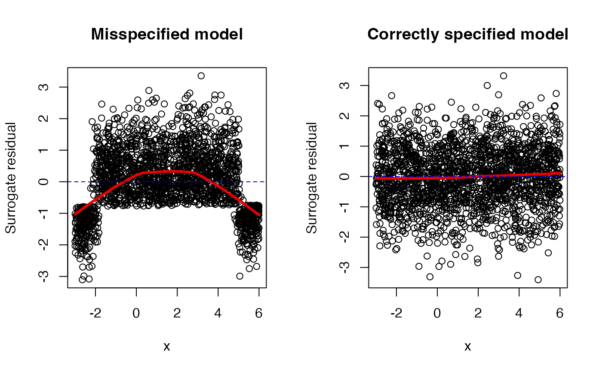

Simulate surrogate response values for cumulative link regression models using the latent method described in Liu and Zhang (2017).
Character string specifying which method to use to generate the
surrogate response values. Current options are "latent" and
"uniform". Default is "latent".
Character string specifying the scale on which to perform
the jittering whenever method = "uniform". Current options are
"response" and "probability". Default is "response".
Integer specifying the number of bootstrap replicates to use.
Default is 1L meaning no bootstrap samples.
Additional optional arguments. (Currently ignored.)
A numeric vector of class c("numeric", "surrogate") containing
the simulated surrogate response values. Additionally, if nsim > 1,
then the result will contain the attributes:
boot_repsA matrix with nsim columns, one for each
bootstrap replicate of the surrogate values. Note, these are random and do
not correspond to the original ordering of the data;
boot_idA matrix with nsim columns. Each column
contains the observation number each surrogate value corresponds to in
boot_reps. (This is used for plotting purposes.)
Surrogate response values require sampling from a continuous distribution;
consequently, the result will be different with every call to
surrogate. The internal functions used for sampling from truncated
distributions are based on modified versions of
truncdist:rtrunc and truncdist:qtrunc.
For "glm" objects, only the binomial() family is supported.
Liu, D., Li, S., Yu, Y., & Moustaki, I. (2020). Assessing partial association between ordinal variables: quantification, visualization, and hypothesis testing. Journal of the American Statistical Association, 1-14. doi: 10.1080/01621459.2020.1796394
Liu, D., & Zhang, H. (2018). Residuals and diagnostics for ordinal regression models: A surrogate approach. Journal of the American Statistical Association, 113(522), 845-854. doi: 10.1080/01621459.2017.1292915
Nadarajah, S., & Kotz, S. (2006). R Programs for Truncated Distributions. Journal of Statistical Software, 16(Code Snippet 2), 1 - 8. doi: 10.18637/jss.v016.c02
# Generate data from a quadratic probit model
set.seed(101)
n <- 2000
x <- runif(n, min = -3, max = 6)
z <- 10 + 3*x - 1*x^2 + rnorm(n)
y <- ifelse(z <= 0, yes = 0, no = 1)
# Scatterplot matrix
pairs(~ x + y + z)
# Setup for side-by-side plots
par(mfrow = c(1, 2))
# Misspecified mean structure
fm1 <- glm(y ~ x, family = binomial(link = "probit"))
s1 <- surrogate(fm1)
scatter.smooth(x, s1 - fm1$linear.predictors,
main = "Misspecified model",
ylab = "Surrogate residual",
lpars = list(lwd = 3, col = "red2"))
abline(h = 0, lty = 2, col = "blue2")
# Correctly specified mean structure
fm2 <- glm(y ~ x + I(x ^ 2), family = binomial(link = "probit"))
#> Warning: glm.fit: fitted probabilities numerically 0 or 1 occurred
s2 <- surrogate(fm2)
scatter.smooth(x, s2 - fm2$linear.predictors,
main = "Correctly specified model",
ylab = "Surrogate residual",
lpars = list(lwd = 3, col = "red2"))
abline(h = 0, lty = 2, col = "blue2")

dev.off() # reset to defaults once finish
#> null device
#> 1